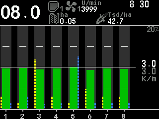

Das Sektionsdiagramm — Säulen, Linien und Farben
Wie Sie die Saat- und Düngerdiagramme des Hectare Mini in den Modi „Durchfluss“, „Hybrid“ und „Einzelkorn“ lesen und was „NICHT ÜBERWACHT“ bedeutet.
Jede Säule eines Diagramms ist eine Saat- oder Düngerreihe — ein Sensor. Ihre Höhe ist der Fluss, der jetzt durch diese Reihe geht. Neben den Säulen zeigt das Mengenfeld oben die gemessene Menge und darunter den eingestellten Wert; solange Sie den Sollwert ändern, ist es einige Sekunden gelb. Wie der Rest gezeichnet wird, hängt vom Modus ab, der unter „Aussaatmodus“ und „Düngermodus“ eingestellt ist: „Durchfluss“, „Hybrid“ oder „Einzelkorn“. Das Düngerdiagramm steht immer über dem Saatdiagramm und läuft meist im Modus „Durchfluss“.
Modus „Durchfluss“

- Alarmschwelle — die untere Zahl des Mengenfeldes, in Körnern je Sekunde (K/s). Der Fluss, unter dem eine Reihe als ausfallend gilt. „PLUS“ und „MINUS“ ändern sie um 1.
- Überwachungslinie — die weiße Linie quer durch das Diagramm: die gezeichnete Alarmschwelle.
- Gemessener Fluss — die obere Zahl: der Durchschnitt der Reihen jetzt.
- Grüne Säule — der Fluss liegt über der Alarmschwelle.
- Gelbe Säule — der Fluss liegt unter der Alarmschwelle: Alarm.
- Keine Säule — überhaupt kein Fluss. Solange die Drillmaschine sät und die Alarme überwacht werden, blinkt der Hintergrund dieser Säule über ihre volle Höhe dunkelrot.
Modus „Hybrid“
Wie „Durchfluss“, mit drei Unterschieden: Der eingestellte Wert ist eine Sollmenge in Körnern je Meter (K/m), verstellt in Schritten von 1; über und unter ihr lassen sich Linien für die zulässige Abweichung zeichnen; und Fehlstellen und Doppelbelegungen werden nicht gezählt.
Modus „Einzelkorn“

- Sollmenge — die untere Zahl des Mengenfeldes, in Körnern je Meter (K/m), verstellt in Schritten von 0,1. Solange Sie sie ändern, zeigt das Panel sie auch als Aussaatdichte in Tsd/ha und als Abstand zwischen den Körnern in Zentimetern.
- Messmenge — die obere Zahl, gemittelt über die Reihen, die jetzt Fluss haben.
- Mengenlinie und die obere und untere Abweichungslinie. Welche davon gezeichnet werden, stellt „Raster“ ein: die Mengenlinie bei „Nein“ oder „Voll“, die Abweichungslinien bei „Teilweise“ oder „Voll“ (Einstellungen des Aussaatdiagramms). Die zulässige Abweichung ist „Mengenfehl.%“ der Kornsensoren.
- Grüne Säule — innerhalb der Abweichung; blau — darüber; gelb — darunter.
- Gelber schraffierter Balken links von einer Säule — die Fehlstellen in dieser Reihe; blauer schraffierter Balken rechts davon — die Doppelbelegungen. Ihre Höhe wird an „Skala F&D,%“ gemessen, das oben im Mengenfeld steht, solange „Fehlst. & Doppel“ auf „Ja“ steht. An Maschinen mit vielen Reihen sind die Säulen zu schmal, und die Balken werden nicht gezeichnet.
Fehlstellen, Doppelbelegungen und die Qualität werden über das Neuberechnungsintervall gezählt — die Wegstrecke, die „Neuberechn.,m“ der Kornsensoren einstellt.
Marken an einer Säule — in allen Modi
| Marke | Bedeutung |
|---|---|
| Weißes Kästchen mit ! | Der Sensor ist aus der Überwachung genommen. |
| Rotes Kreuz | Keine Verbindung zum Sensor. |
| Grauer Hintergrund, weiße Nummer | Der im Sensoreinstellmodus gewählte Sensor. |
| Hellgraue Schraffur | Die Reihe ist für eine Fahrgasse abgeschaltet — siehe Nächster Fahrgassen-Durchgang. |
„NICHT ÜBERWACHT“
Das Panel beginnt die Saatalarme erst zu überwachen, wenn die Drillmaschine wirklich sät: wenn mindestens der unter „Anteil säend,%“ eingestellte Anteil der Reihen (standardmäßig 20 %) innerhalb des eingestellten Wertes sät — und, wenn am Geschwindigkeitssensor „Aussaatkriterium“ eingestellt ist, solange die Drillmaschine fährt. Saat- und Düngeralarme beginnen und enden gemeinsam. Ein kurzer Piepton sagt, dass die Überwachung begonnen hat; drei kurze Pieptöne, dass sie geendet hat.
Sät die Drillmaschine, bleibt der Fluss aber unter dem eingestellten Wert, zeigt das Diagramm „NICHT ÜBERWACHT“. Entweder ist der Fluss während der Arbeit gefallen — eine echte Störung — oder die Alarmschwelle oder Sollmenge ist höher eingestellt, als die Maschine liefert.
Ihre Maschine tut etwas, das diese Seite nicht beantwortet? Schreiben Sie an support@agriwelt.com — es antwortet ein Ingenieur.